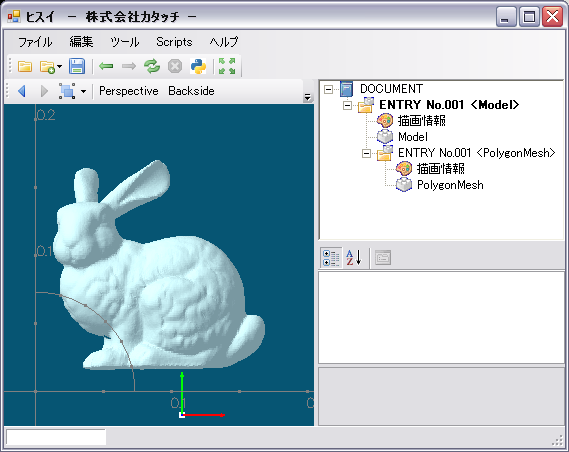
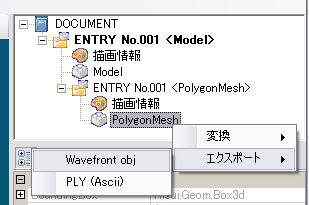
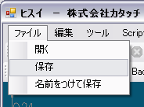

ヒスイは基本的にはアプリケーション開発のプラットフォームですが、 Ver1.1から標準プラグインとしてある程度の機能が用意されていますので、そのままツールとして利用することも出来ます。 標準で次の機能が備わっています。
bin/hisui.exe をダブルクリックして起動します。

| 回転 | マウス右ボタンでビューをドラッグします |
| パン | Shift+マウス右ボタンでビューをドラッグします |
| ズーム | 3つの方法があります。
(a). Ctrl+マウス右ボタンでビューをドラッグします (b). マウスホイールでズームが出来ます (c). マウス中ボタンをドラッグして矩形を描くと、その矩形領域にズームします |
| 注視点移動 | マウス中ボタンでオブジェクトをクリックすると、その位置に注視点が移動します。
この操作により、ビューの回転中心を制御することが出来ます。 なお、ズーム操作(c)においても注視点（回転中心）はズーム先に設定されます。 |
| 拡張子 | 説明 |
|---|---|
| asc | 点群の X, Y, Z 座標をカンマまたはスペース区切りで列挙したもの |
| obj | Wavefront obj 形式（テクスチャには未対応） |
| stl | STereo-Lithography 形式 |
| ply | スタンフォード大学などで使用されているポリゴンフォーマット |
下図はスタンフォード大学のウサギ（stanford bunny; *.ply 形式）を読み込んだ様子です。
(このデータは次のURLから入手できます。
http://graphics.stanford.edu/data/3Dscanrep/)

ファイルをビューにドロップすると、そのファイルがインポートされます。
下図のツールボタンからインポートするファイルの種類を選びます。

まずツリービューの DOCUMENT ノードを右クリックし、[モデルの新規作成] メニューを選択します。

次にDOCUMENTの下に生成されたModelノードを右クリックし、[インポート] メニューを選択します。

上のウサギのデータを読み込んだ画面のツリービューを見ると、"PolygonMesh" と書かれたノードがあることが分かります。 これは、PLYファイルを読み込むとヒスイ内部では PolygonMesh というデータ型で格納されていることを示しています。
下記に各ファイルを読み込んだときのデータ型を示します。
| 拡張子 | データ型（クラス） |
|---|---|
| *.obj, *.ply | PolygonMesh |
| *.stl | TriangleSoup |
ツリービューの下にはプロパティウィンドウがあります。
| PolygonMesh | TriangleSoup |
|---|---|
|
|
調べる機会が多いのは Count プロパティです。 左のPolygonMeshではファセット数が69451、頂点数が35947であることが分かります。 同様に右のTriangleSoupでは、三角形の数が69451であることが分かります。
PolygonMesh と TriangleSoup は相互にデータ変換を行うことが可能です。
PolygonMesh から TriangleSoup へ変換する場合：
TriangleSoup から PolygonMesh へ変換する場合：
なお、データの品質次第では、TriangleSoup から PolygonMesh への変換は失敗する場合があります。
PolygonMeshは*objまたは*.plyへ、TriangleSoupは*.stlへエクスポートすることが出来ます。 例えばPolygonMeshを*.objにエクスポートするには下図のように操作を行います。

ヒスイは HiX 形式という独自のファイルフォーマットをサポートしています。 PolygonMesh や TriangleSoup を HiX 形式で保存することも可能です。

Copyright © 2007, 株式会社カタッチ
http://www.quatouch.com